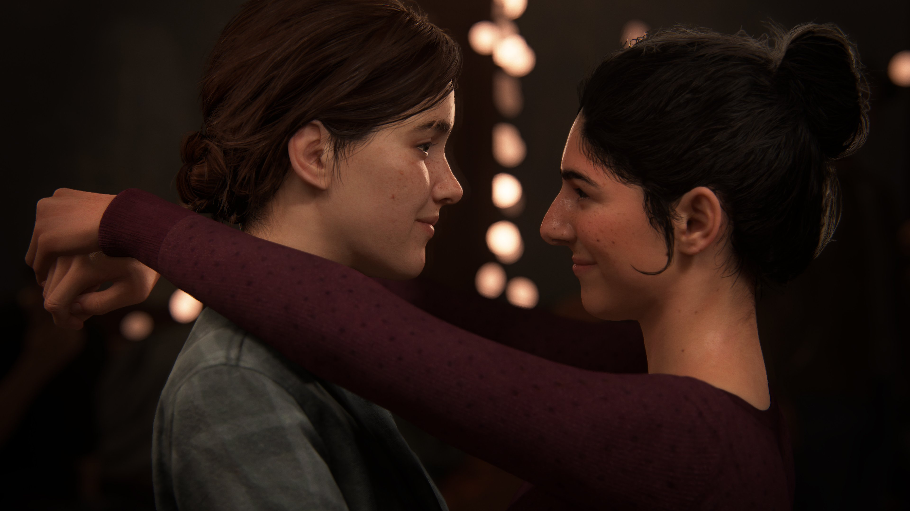

Página Inicial
Bem vindo a um site fandom de The Last of Us.

The Last of Us é um jogo de gênero que mistura elementos de sobrevivência e ação para contar uma história de personagens sobre uma praga moderna dizimando a humanidade. A natureza invade a civilização, forçando os sobreviventes restantes a matarem por comida, armas e qualquer coisa que possam achar.
O jogo é repleto de cenários, personagens, armas, uma ótima jogabilidade e um hitória envolvente.
Sobre The Last of Us
O jogo acompanha Joel Miller em sua jornada para tentar salvar o mundo. O personagem é encarregado de tirar Ellie, uma garota imune ao vírus que devastou o mundo, para fora de uma zona de quarentena, embarcando em uma trajetória mortal para encontrar a cura.
Sobre The Last of Us Left Behind
A história de Left Behind segue uma linha do tempo não linear do tempo de Ellie com Riley antes de conhecer Joel, e as conseqüências da luta com o grupo de David na Universidade do Colorado Oriental. ... Definidas três semanas antes do The Last of Us acontecer
Sobre The Last of Us 2
Ambientado cinco anos após os eventos de The Last of Us (2013), o jogador assume o papel de duas protagonistas em um Estados Unidos pós-apocalíptico: Ellie, que busca por vingança após um evento traumático, e Abby, uma soldada que se envolve em um conflito entre uma milícia e um culto.